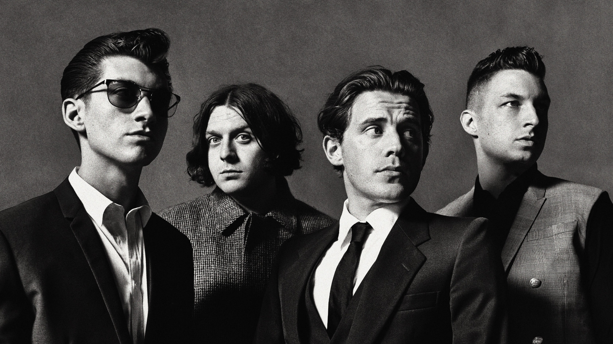

Arctic Monkeys are an English rock band formed in Sheffield in 2002. The group consists of lead singer Alex Turner, drummer Matt Helders, guitarist Jamie Cook and bassist Nick O'Malley. Former bassist Andy Nicholson left the band in 2006 shortly after their debut album, Whatever People Say I Am, That's What I'm Not, was released.
Arctic Monkeys were heralded as one of the first bands to come to public attention via the Internet, with commentators suggesting they represented the possibility of a change in the way in which new bands are promoted and marketed.[2] Their debut album, Whatever People Say I Am, That's What I'm Not (2006), received widespread critical acclaim upon release and topped the UK Albums Chart, becoming the fastest-selling debut album in British chart history at the time. It won Best British Album at the 2007 Brit Awards and has since been hailed as one of the greatest debut albums.[3] The band's second album, Favourite Worst Nightmare (2007), was also acclaimed by critics and won Best British Album at the 2008 Brit Awards. They went on to release Humbug (2009) and Suck It and See (2011), both of which were well-received critically, albeit not to the extent of their first two albums.